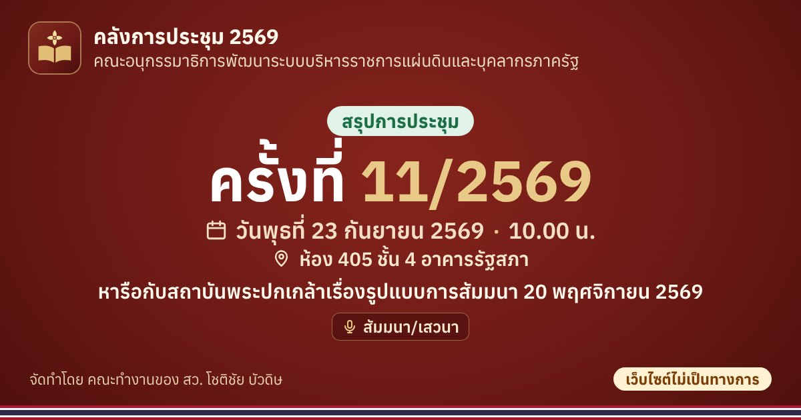

ครั้งที่ 11/2569 (23 ก.ย. 2569) · คณะอนุกรรมาธิการพัฒนาระบบบริหารราชการแผ่นดินและบุคลากรภาครัฐ
หารือกับสถาบันพระปกเกล้าเรื่องรูปแบบการสัมมนา 20 พฤศจิกายน 2569
เปิดอ่านการประชุมครั้งนี้ จัดทำโดย คณะทำงานของ สว. โชติชัย บัวดิษ · เว็บไซต์ไม่เป็นทางการ บทสรุปเรียบเรียงจากเอกสารที่วุฒิสภาเผยแพร่ หากต่างจากต้นฉบับ ให้ถือตามเอกสารต้นฉบับ